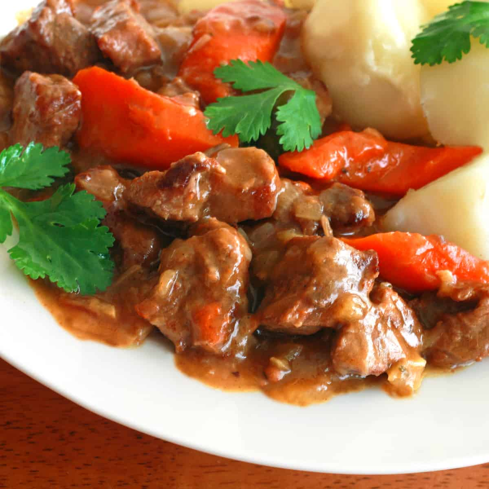

Home
Kalops

A soul-satisfying stew that is filling and flavorful. This traditional Swedish Kalops recipe is just what the cold weather calls for!
Ingredients
- 3 tablespoons butter
- 1 lb beef chuck
- 1 tablespoon flour
- 2 medium onions
- 2 cloves garlic
- 3 tablespoons flour
- 1/4 cup red wine
- 2 large carrots
- 4 bay leaves
- 10 whole allspices berries
- 10 white peppercorns
- 2 tablespoons beef broth base or 2 beef bouillon cubes
- water
- salt
Instructions
- Dry the beef cubes with a paper towel. Sprinkle the flour evenly over the beef cubes and toss to coat.
- Heat the butter on medium-high heat in a Dutch oven or heavy pot. Generously brown the beef on all sides then transfer to a plate and set aside.
- In the same Dutch oven, heat another 2 tablespoons of butter and sauté the onions until translucent and just beginning to caramelize. Add the garlic and sauté for another minute. Add the 3 tablespoons of flour and stir for 1 minute. Add the wine and bring to a boil for one minute. Add all remaining ingredients, adding just enough water to cover the meat. Bring it to a boil, reduce heat to low, cover and simmer for 1 hour. If the sauce is too thin at that point, remove the lid and continue to simmer for another 20 minutes or until the desired consistency is reached. Remove the bay leaves and allspice berries before serving.
- Serve with potatoes and pickled beets.
Source